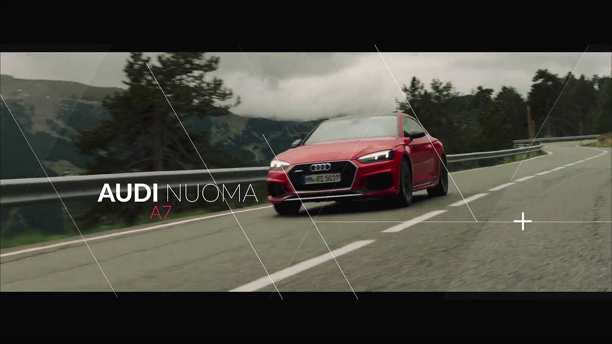

Automobilių kilimėliai | Guminiai | Modeliniai (pagal modelį) - Autoviskas.lt
 | Apie mus | Prekių pristatymas | Prekių grąžinimas | Pirkimo taisyklės | Asmens duomenų tvarkymas | /autoviskas.lt Krepšelis 0 prekė(s)
Jūsų prekių krepšelis tuščias
Mano paskyra Pageidavimai Mano paskyra Atsiskaitymas Registruotis Prisijungti Ieškoti +370 642 21111 Komerciniam transportui Tachografų skaitytuvai Automobiliniai šaldytuvai Oro pagalvės važiuoklei Važiuoklės oro pagalvių komplektai Važiuoklės oro pagalvių dalys Sunkvežimių staliukai Sunkvežimių kilimėliai CB radijo įranga CB antenos CB racijos Sunkvežimių sėdynių užvalkalai Krovinių transportavimui Dviračių laikikliai Stogo bagažinės Stogo skersiniai Integruotiems relingams Išoriniams relingams Automobilių kabliai Kablių priedai JAV adapteriai ir kablių antgaliai Kabliai automobiliams Auto aksesuarai Valytuvai Automobiliniai kilimėliai Salono kilimėliai Bagažinės kilimėliai Mikroautobusų krovinių skyriaus kilimėliai Universalūs kilimėliai Slenksčių ir bamperių apsaugos Galinio bamperio apsaugos Slenksčių apsaugos Sėdynių užvalkalai Modeliniai sėdynių užvalkalai Universalūs sėdynių užvalkalai Deflektoriai Langų deflektoriai Sunkvežimių ir autobusų deflektoriai Stoglangio deflektoriai Žiemos deflektoriai Kapoto deflektoriai Lankai ir slenksčiai automobiliams Priekiniai lankai automobiliams Slenksčiai automobiliams Komforto įranga Sėdynių šildymas Laisvų rankų įranga Parkavimo sistemos Garso izoliacija Garso izoliacija Vibro izoliacija Automobilių šildytuvai ir kondicionieriai Automobiliniai kondicionieriai Automobiliniai šildytuvai Kitos prekės automobiliams Parkavimo davikliai Automobilių apšvietimas DRL dienos žibintai Papildomi žibintai Rūko žibintai Automobilių garso aparatūra Auto magnetolos ir multimedia Auto stiprintuvai Auto kolonėlės, garsiakalbiai Žemo dažnio garsiakalbiai Vaizdo registratoriai Automobiliniai šaldytuvai Buksyravimo kilpos Kategorijos Auto aksesuarai Automobiliniai kilimėliai Mikroautobusų krovinių skyriaus kilimėliai Salono kilimėliai Bagažinės kilimėliai Universalūs kilimėliai Deflektoriai Kapoto deflektoriai Langų deflektoriai Stoglangio deflektoriai Sunkvežimių ir autobusų deflektoriai Žiemos deflektoriai Lankai ir slenksčiai automobiliams Priekiniai lankai automobiliams Slenksčiai automobiliams Sėdynių užvalkalai Modeliniai sėdynių užvalkalai Universalūs sėdynių užvalkalai Slenksčių ir bamperių apsaugos Galinio bamperio apsaugos Slenksčių apsaugos Automobilių kabliai Kabliai automobiliams JAV adapteriai ir kablių antgaliai Kablių priedai Kitos prekės automobiliams Automobiliniai šaldytuvai Automobilių garso aparatūra Auto magnetolos ir multimedia Auto kolonėlės, garsiakalbiai Buksyravimo kilpos Parkavimo davikliai Vaizdo registratoriai Automobilių apšvietimas DRL dienos žibintai Papildomi žibintai Rūko žibintai Komerciniam transportui Tachografų skaitytuvai Automobiliniai šaldytuvai CB radijo įranga CB antenos CB racijos Mikroautobusų krovinių skyriaus kilimėliai Oro pagalvės važiuoklei Važiuoklės oro pagalvių dalys Važiuoklės oro pagalvių komplektai Sunkvežimių ir autobusų deflektoriai Sunkvežimių kilimėliai Sunkvežimių sėdynių užvalkalai Sunkvežimių staliukai Skersiniai, bagažinės, laikikliai Dviračių laikikliai Stogo bagažinės Stogo skersiniai Išoriniams relingams Integruotiems relingams Valytuvai Automobilių komforto įranga Automobilių šildytuvai ir kondicionieriai Automobiliniai kondicionieriai Automobiliniai šildytuvai Parkavimo sistemos Sėdynių šildymas Garso izoliacija Garso izoliacija Vibro izoliacija Laisvų rankų įranga Auto aksesuarai Automobiliniai kilimėliaiSalono kilimėliai
Pasirinkite automobilį
Markė: Pasirinkite Acura Alfa Romeo Audi BMW Buick Cadillac Chevrolet Chrysler Citroen Dacia Daewoo Daihatsu Dodge Fiat Fiat Ford Honda Hummer Hyundai Infiniti Isuzu Iveco Jaguar Jeep Kia Lada Lancia Land Rover Lexus Lincoln Mazda Mercedes Mini Mitsubishi Nissan Opel Peugeot Pontiac Porsche Renault Rover Saab Scion Seat Skoda Smart SsangYong Subaru Suzuki Tesla Toyota Volkswagen Volvo Modelis: Pasirinkite Metai: Pasirinkite Auto aksesuarai Automobiliniai kilimėliai Salono kilimėliai Prekių palyginimas (0) Rūšiuoti pagal: Standartinė Pavadinimas (A - Z) Pavadinimas (Z - A) Kaina (Žema Aukšta) Kaina (Aukšta Žema) Įvertinimai (Aukščiausi) Įvertinimai (Žemiausi) Prekės kodas (A - Z) Prekės kodas (Z - A) Rodyti: 24 48 72 96Auto kilimėliai Alfa Romeo 147 (2000-2010) Guminiai
22.43€ 23.61€Įmonės Frogum gaminami modeliai automobiliniai kilimėliai pasižymi labai aukšta kokybe, kuria vartotojai įsitikino jau ne kartą, mat šis gamintojas veiklą pradėjo dar 1985 metais. Šie automobiliniai k.....
Auto kilimėliai Alfa Romeo 147 (2000-2010) Guminiai
22.43€ 23.61€Įmonės Frogum gaminami modeliai automobiliniai kilimėliai pasižymi labai aukšta kokybe, kuria vartotojai įsitikino jau ne kartą, mat šis gamintojas veiklą pradėjo dar 1985 metais. Šie automobiliniai k.....
Auto kilimėliai Alfa Romeo 156 (1997-2003) Guminiai
22.43€ 23.61€Įmonės Frogum gaminami modeliai automobiliniai kilimėliai pasižymi labai aukšta kokybe, kuria vartotojai įsitikino jau ne kartą, mat šis gamintojas veiklą pradėjo dar 1985 metais. Šie automobiliniai k.....
Auto kilimėliai Alfa Romeo 159 (2005-2011) Guminiai
21.79€ 22.94€Įmonės Frogum gaminami modeliai automobiliniai kilimėliai pasižymi labai aukšta kokybe, kuria vartotojai įsitikino jau ne kartą, mat šis gamintojas veiklą pradėjo dar 1985 metais. Šie automobiliniai k.....
Auto kilimėliai Alfa Romeo Giulia (2015→) Guminiai
23.71€ 24.96€Įmonės Frogum gaminami modeliai automobiliniai kilimėliai pasižymi labai aukšta kokybe, kuria vartotojai įsitikino jau ne kartą, mat šis gamintojas veiklą pradėjo dar 1985 metais. Šie automobiliniai k.....
Auto kilimėliai Alfa Romeo Giulietta (2010→) Guminiai
21.79€ 22.94€Įmonės Frogum gaminami modeliai automobiliniai kilimėliai pasižymi labai aukšta kokybe, kuria vartotojai įsitikino jau ne kartą, mat šis gamintojas veiklą pradėjo dar 1985 metais. Šie automobiliniai k.....
Auto kilimėliai Alfa Romeo MiTo (2008-2018) Guminiai
23.71€ 24.96€Įmonės Frogum gaminami modeliai automobiliniai kilimėliai pasižymi labai aukšta kokybe, kuria vartotojai įsitikino jau ne kartą, mat šis gamintojas veiklą pradėjo dar 1985 metais. Šie automobiliniai k.....
Auto kilimėliai Alfa Romeo Stelvio (2016→) Guminiai
23.71€ 24.96€Įmonės Frogum gaminami modeliai automobiliniai kilimėliai pasižymi labai aukšta kokybe, kuria vartotojai įsitikino jau ne kartą, mat šis gamintojas veiklą pradėjo dar 1985 metais. Šie automobiliniai k.....
Auto kilimėliai Audi 100 C4 (1990-1994) Guminiai
23.71€ 24.96€Įmonės Frogum gaminami modeliai automobiliniai kilimėliai pasižymi labai aukšta kokybe, kuria vartotojai įsitikino jau ne kartą, mat šis gamintojas veiklą pradėjo dar 1985 metais. Šie automobiliniai k.....
Auto kilimėliai Audi A1 I (2010-2019) Guminiai
21.16€ 22.27€Įmonės Frogum gaminami modeliai automobiliniai kilimėliai pasižymi labai aukšta kokybe, kuria vartotojai įsitikino jau ne kartą, mat šis gamintojas veiklą pradėjo dar 1985 metais. Šie automobiliniai k.....
Auto kilimėliai Audi A2 (2000-2005) Guminiai
25.63€ 26.98€Įmonės Frogum gaminami modeliai automobiliniai kilimėliai pasižymi labai aukšta kokybe, kuria vartotojai įsitikino jau ne kartą, mat šis gamintojas veiklą pradėjo dar 1985 metais. Šie automobiliniai k.....
Auto kilimėliai Audi A3 I (1996-2003) Guminiai
22.43€ 23.61€Įmonės Frogum gaminami modeliai automobiliniai kilimėliai pasižymi labai aukšta kokybe, kuria vartotojai įsitikino jau ne kartą, mat šis gamintojas veiklą pradėjo dar 1985 metais. Šie automobiliniai k.....
Auto kilimėliai Audi A3 II (2004-2012) Guminiai
22.43€ 23.61€Įmonės Frogum gaminami modeliai automobiliniai kilimėliai pasižymi labai aukšta kokybe, kuria vartotojai įsitikino jau ne kartą, mat šis gamintojas veiklą pradėjo dar 1985 metais. Šie automobiliniai k.....
Auto kilimėliai Audi A3 III (2012→) Guminiai
21.16€ 22.27€Įmonės Frogum gaminami modeliai automobiliniai kilimėliai pasižymi labai aukšta kokybe, kuria vartotojai įsitikino jau ne kartą, mat šis gamintojas veiklą pradėjo dar 1985 metais. Šie automobiliniai k.....
Auto kilimėliai Audi A4 B5 (1994-2001) Guminiai
23.71€ 24.96€Įmonės Frogum gaminami modeliai automobiliniai kilimėliai pasižymi labai aukšta kokybe, kuria vartotojai įsitikino jau ne kartą, mat šis gamintojas veiklą pradėjo dar 1985 metais. Šie automobiliniai k.....
Auto kilimėliai Audi A4 B6 (2001-2006) Guminiai
23.71€ 24.96€Įmonės Frogum gaminami modeliai automobiliniai kilimėliai pasižymi labai aukšta kokybe, kuria vartotojai įsitikino jau ne kartą, mat šis gamintojas veiklą pradėjo dar 1985 metais. Šie automobiliniai k.....
Auto kilimėliai Audi A4 B7 (2004-2009) Guminiai
23.71€ 24.96€Įmonės Frogum gaminami modeliai automobiliniai kilimėliai pasižymi labai aukšta kokybe, kuria vartotojai įsitikino jau ne kartą, mat šis gamintojas veiklą pradėjo dar 1985 metais. Šie automobiliniai k.....
Auto kilimėliai Audi A4 B8 (2009-2015) Guminiai
23.71€ 24.96€Įmonės Frogum gaminami modeliai automobiliniai kilimėliai pasižymi labai aukšta kokybe, kuria vartotojai įsitikino jau ne kartą, mat šis gamintojas veiklą pradėjo dar 1985 metais. Šie automobiliniai k.....
Auto kilimėliai Audi A4 B9 (2016→) Guminiai
23.07€ 24.28€Įmonės Frogum gaminami modeliai automobiliniai kilimėliai pasižymi labai aukšta kokybe, kuria vartotojai įsitikino jau ne kartą, mat šis gamintojas veiklą pradėjo dar 1985 metais. Šie automobiliniai k.....
Auto kilimėliai Audi A5 I (2007-2016) Guminiai
27.56€ 29.01€Įmonės Frogum gaminami modeliai automobiliniai kilimėliai pasižymi labai aukšta kokybe, kuria vartotojai įsitikino jau ne kartą, mat šis gamintojas veiklą pradėjo dar 1985 metais. Šie automobiliniai k.....
Auto kilimėliai Audi A5 II (2016→) Guminiai
32.02€ 33.70€Įmonės Frogum gaminami modeliai automobiliniai kilimėliai pasižymi labai aukšta kokybe, kuria vartotojai įsitikino jau ne kartą, mat šis gamintojas veiklą pradėjo dar 1985 metais. Šie automobiliniai k.....
Auto kilimėliai Audi A6 C4 (1994-1997) Guminiai
23.71€ 24.96€Įmonės Frogum gaminami modeliai automobiliniai kilimėliai pasižymi labai aukšta kokybe, kuria vartotojai įsitikino jau ne kartą, mat šis gamintojas veiklą pradėjo dar 1985 metais. Šie automobiliniai k.....
Auto kilimėliai Audi A6 C5 (1997-2004) Guminiai
23.71€ 24.96€Įmonės Frogum gaminami modeliai automobiliniai kilimėliai pasižymi labai aukšta kokybe, kuria vartotojai įsitikino jau ne kartą, mat šis gamintojas veiklą pradėjo dar 1985 metais. Šie automobiliniai k.....
Auto kilimėliai Audi A6 C6 (2004-2006) Guminiai
23.71€ 24.96€Įmonės Frogum gaminami modeliai automobiliniai kilimėliai pasižymi labai aukšta kokybe, kuria vartotojai įsitikino jau ne kartą, mat šis gamintojas veiklą pradėjo dar 1985 metais. Šie automobiliniai k.....
1 2 3 4 5 6 7 8 9 |Automobiliniai kilimėliai yra būtinas aksesuaras jūsų automobiliui dėl kelių priežasčių - automobilių kilimėliai palaiko švarą bei suteikia jūsų automobiliui jaukumo, o taip pat saugo kėbulą nuo drėgmės poveikio. Priešingai daugelio įsitikinimui, originalios automobilio kiliminės dangos negana apsaugoti automobilio kėbulą nuo ardančio drėgmės poveikio. Pavyzdžiui žiemą, ypač gyvenant mūsų šalies sąlygomis, kur žiemą sninga, o šiltuoju periodu lietus pliaupia kone kas dieną, drėgmė lengvai prasiskverbia pro automobilio kiliminę dangą ir pasiekia automobilio kėbulą, o kai tai nutinka prasideda korozija. Tačiau net kuomet lauke sausa, dulkės ir purvas gali pridaryti problemų. Nešvarumai įsigeria į automobilio kiliminę dangą ir juos išvalyti ne taip paprasta.
Automobilių kilimėliai, arba, kaip kalbininkai siūlo vadinti, automobiliniai kilimėliai, gali padėti to išvengti. Automobilio kiliminės dangos neištepsite jei ant jos bus užtiesti automobiliniai kilimėliai, jų priežiūra daug paprastesnė. Guminiai automobiliniai kilimėliai išsivalo ypatingai paprastai, pakanka juos patrinti muiluotu šepečiu ir nuplauti po vandens srove, tuo tarpu tekstiliniai automobilių kilimėliai reikalauja daugiau priežiūros, tačiau jie suteikia automobilio salonui daugiau jaukumo. Guminiai automobilių kilimėliai labiau skirti drėgnajam metų laikui, kuomet visur daug vandens, o tekstiliniai automobilių kilimėliai - šiltajam periodui, kuomet drėgmės ne tiek daug. Pastarieji automobiliniai kilimėliai dažnai gali būti pagaminti pagal specialų užsakymą ir pritaikyti pagal jūsų automobilio spalvą.
Daugelio automobilių vairuotojų kilimėliai įsigyjami tam, kad apsaugoti automobilio saloną. Tai puiki priemonė, skirta šiam tikslui, tiek lengviems automobiliams, tiek ir visureigiams, sunkvežimiams ir net specialiajam transportui. Kokybiški autokilimėliai padės išlaikyti pradinę automobilio salono dugno dangos būklę, o automobilio interjero priežiūra ilgainiui padės vartotojui išvengti brangiai kainuojančio cheminio valymo. Labiausiai paplitę autokilimėliai būna dviejų tipų – guminiai automoblių kilimėliai ir tekstiliniai automobilių kilimėliai. Jie turi būdingų skirtumų, nors tuo pat galima metu rasti daug pranašumų ir trūkumų tiek pirmojoje, tiek antroje grupėje.
Dažniausiai vartotojams siūlomas platus automobilių aksesuarų asortimentas specializuotose auto aksesuarų parduotuvėse ir internete. Prieš pasirenkant konkretų modelį, vertėtų susipažinti su siūloma preke ir jos techninėmis charakteristikomis, norint tiksliai suprasti, kuo skiriasi guminiai automobiliniai kilimėliai nuo tekstilinių, jų naudojimo sritį, stilių, bei naudojimo ypatumus. Be universalių variantų galima verta pasvarstyti ar modeliniai automobilių kilimėliai nebūtų tinkamesnis pasirinkimas.
Kuo skiriasi automobilių kilimėliai
Nors kilimėliai ir atlieka panašias funkcijas, nepriklausonai nuo to ar tai guminiai kilimėliai automobiliams, ar pagaminti iš tekstrilės, kalbant apie automobilio interjero apsaugą nuo purvo ir vandens, jie skiriasi efektyvumu. Vartotojui, norinčiam teisingai pasirinkti, svarbu suprasti abiejų variantų panašumus ir trūkumus.
Guminiai automobiliniai kilimėliai
Tokie kilimėliai gaminami iš ypatiungai tvirtos pramoninės gumos, o tai yra labai svarbus apsaugos veiksnys. Dažnai kilimėliai gaminami pakeltais krašteliais, kurie veikia kaip papildomas barjeras tarp automobilio interjero ir bet kokio nepageidaujamo purvo ar drėgmės.
Be to, modeliniai kilimėliai iš gumos išsiskiria tuo, kad turi daug įvairių griovelių, raštų ir specialų apvadą, kurie neleidžia vandeniui ir skysčiams patekti nuo automobilio kilimėlio antautomobilio dugno. Paprastai guminiai automobilių kilimėliai turi numatytas fiksavimo vietas ar neslidų dugną su guminiais smaigaieliais arba specialiomis iškyšomis, kurios padeda pritvirtinti kilimą tinkamoje vietoje transporto priemonės viduje ir užtikrina jog kilimėlis nepasislinks iš savo vietos.
Tekstiliniai kilimėliai automobiliams
Šie modeliniai automobilių kilimėliai gaminami iš patvaraus nailono ir specialaus austinio ar veltinio pluošto tam, kad būtų sukurta savotiška pagalvė pėdoms. Šios medžiagos būna įvairių storių ir pasižymi tuo, jog turi didžiulį asortimentą spalvų ar tekstūrų, kas leidžia vairuotojui įsigyti unikalaus dizaino produktą, pritaikyta jo automobiliui. Dažniausiai tekstiliniai kilimėliai pagal automobilį gaminami su tankia pastiko ar gumos danga apatinėje dugno pusėje. Ši guminė danga apsaugo automobilio dugną nuo drėgmes prasiskverbimo iš kilimėlio pluošto. Kaip ir guminiai, tekstiliniai kilimėliai turi dygliukus ar neslidų, šiurkštų dugno paviršių tam, kad kilimėliai neslidinėtų ir būtų patikimai užfiksuoti savo vietoje.
Kam reikalingi autokilimėliai?
Automobilių kilimėliai gali būti naudojami ne vienu tikslu. Yra keletas pagrindinių priežasčių, kodėl reiktų pagalvoti ar šeimos automobilių kilimėlių atnaujinimą. Kokybiški guminiai automobiliniai kilimėliai ar tekstiliniai kilimėliai automobiliui apsaugo nuo nepageidaujamo skysčio išsiliejimo, dėmių, nešvarumų ir purvo, o taip pat ir saugo nuo kasdienio susidėvėjimo jūsų transporto priemonę. Turėkite omenyje, kad tekstiliniai kilimėliai pagal automobilį skiriasi nuo guminių automobilinių kilimėlių savo galimybėmis ir priežiūra, tad visada geriausia išsirinkti sau tinkamiausią variantą.
Skysčių išsiliejimas - kuo dažniau naudojate savo transporto priemonę, tuo didesnė neišvengiamų dėmių ir išsiliejimų tikimybė. Dažnai automobilyje geriame, valgome, vežame pirkinius, todėl visada išlieka tikimybe užteršti saloną. Siekiant apsaugoti nuo to, modeliniai automobilių kilimėliai turėtų būti nelaidųs skysčiams ir turi turėti šiek tiek pakeltus kraštelius. Nors tiek guminiai autokilimėliai, tiek tekstiliniai automobilių kilimėliai pasižymi panašiomis savybėmis, guminiai autokilimėliai yra žymiai lengviau valomi – juos pakanka tiesiog nuplauti vandens srove arba nušluostyti skudurėliu. Tuo tarpu tekstiliniai kilimėliai automobiliams veikia kiek kitaip. Jie sugeriai išsiliejusį skystį, taip apsaugodami automobilio dugną nuo užteršimo, tačiau susitepdami patys. Be to, būtent guminiai autokilimėliai užtikrina geriausią apsaugą nuo skysčio patekimo ant automobilio dugno dangos.
Dulkės ir nešvarumai - jei gėrimų išsiliejimo lengviau išvengti, purvo ir dulkių patekimo į automobilio saloną beveik neįmanoma suvaldyti ir užkirsti tam kelio. Kaskart lipdami į automobilį atsinešame purvą batuose, mylimų augintinių letenėlėse ir daugybe kitų pačių įvairiausių būdų, kurių sukontroliuoti beveik neįmanoma. Guminiai kilimėliai apsaugo nuo nešvarumų, smėlio ir dulkių taip pat gerai, kaip ir nuo išsiliejusių skysčių ir dėmių. Guminiai automobilių kilimėliai dulkėms ir purvui yra toks pat neįveikiamas barjeras kaip ir vandeniui ar kitiems skysčiams. Tuo tarpu tekstiliniai automobilių kilimėliai purvą absorbuoja į save. Tik šiuo atveju nešvarumus iš tekstilinių kilimėlių pašalinti žymiai paprasčiau, tam pakanka - dulkių siurblio ar šepečio, nešvarumai taip pat lengvai išbyra kilimėliį išėmus ir papurčius.
Kasdieninis susidėvėjimas - net jei jūs galite apsaugoti savo automobilio dugno dangą nuo purvo, dulkių patekimo ir skysčių išsiliejimo, jūsų transporto priemonės interjeras neišvengiamai kasdien dėvisi. Kilimėliai, nepriklausomai nuo medžiagos iš kurios pagaminti, sukurs barjerą tarp keleivių avalynės ir salono grindų, juk kasdienis avalynės ir kulnų bei vidinės dangos kontaktas skatina laipsnišką susidėvėjimą, spalvos pakitimą ir grindų dangos plyšimą, vėliau įtakojančius automobilio kainą bei bendrą komfortą salone. Patiesti automobilių kilimėliai žymiai sulėtina ar net sustabdo šį procesą, visą batų padų įtaką perimdami į save.
Svarbu žinoti
Be ankščiau minėtų veiksnių renkantis automobilinius kilimėlius savo automobiliui, apsvarstykite keletą kitų veiksnių, kurie gali turėti įtakos jūsų sprendimui:
Oro sąlygos - guminiai kilimėliai automobiliams tekstiliniams nusileidžia dėl dizaino galimybių, tačiau net patys geriausi tekstiliniai automobilinai kilimėliai neapsaugos jūsų automobilio salono esant ekstremaliam vandens kiekiui drėgnuoju metų periodu. Nuolatinių kritulių, lietaus ir sniego, poveikis gali labai greitai sugadinti tekstilinius automobilių kilimėlius ir jie praras savo efektyvumą. Tuo tarpu guminiai kilimėliai atsparūs grėgmei, nes jos visiškai neabsorbuoja ir skysčiai neveikia gumos. Tekstiliniai kilimėliai , savo ruožtu, suteikia daugiau komforto, bet yra tinkamesni sausajam metų periodui, kuomet užtikrina puikią apsaugą nuo dulkių ir purvo. Turint omenyje šiuos faktus, kartais gali praversti įsigyti du kilimėlių komplektus – guminiai kilimėliai pravers rudenį, pavasarį ir žiemą, o tekstiliniai automobilių kilimėliai sukurs jaukumo ir suteiks apsaugą vasarą.
Stilius ir dizainas - nors automobilių kilimėliai turėtų užtikrinti tinkamą automobilio interjero apsaugą, tai dar nereiškia, kad vairuotojas turi vardan to paaukoti savo stilių. Šiandien rinkoje siūlomi įvairūs autokilimėliai su daugybe skirtingų spalvų derinių, pasiųti etiketėmis, unikalaus dizaino ir su automobilių gamintojų logotipais. Galite pasirinkti iš įvairiausių autombilinių kilimėlių modelių, kurie bus pritaikyti jūsų automobilio dizainui ar nuotaikai.
Automobiliniai kilimėliai yra vienas efektyviausių būdų apsaugoti jūsų automobilio interjerą!
Daugiau straipsnių:
Automobiliniai kilimėliai Rezaw Plast
Automobiliniai kilimėliai - tekstilė prieš gumą
Parkavimo davikliai - kokie jie būna
Informacija
Apie mus Prekių pristatymas Prekių grąžinimas Pirkimo taisyklės Asmens duomenų tvarkymas Susisiekite su mumis Atsiliepimai Svetainės žemėlapis Mūsų kolegos bei partneriaiKategorijos
Auto aksesuarai Automobilių kabliai Kitos prekės automobiliams Komerciniam transportui Skersiniai, bagažinės, laikikliai Valytuvai Automobilių komforto įrangaAutoviskas.lt
MB Skolas
Įmonės kodas: 304136883
PVM kodas: LT100009787012
+370 642 21111
[email protected]
/autoviskas.lt
I-V 9:00-18:00